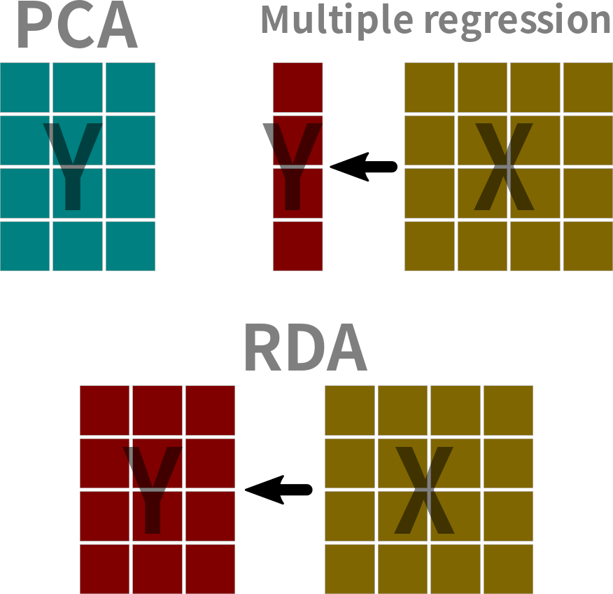
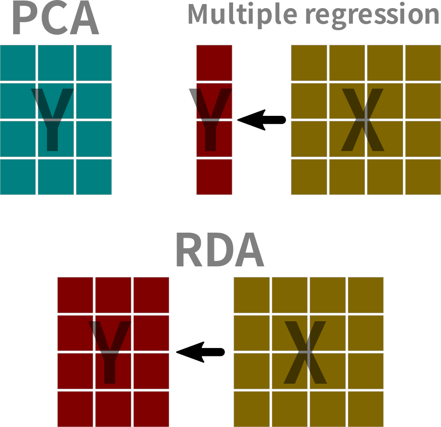

2024 / 04 / 29
Redundancy analysis (RDA)1 a canonical ordination2 method and is one type of asymmetric canonical analysis3 that is used to analyze two data tables simultaneously. In RDA we are interested in how the environmental data \((\mathbf{X})\) influences ordination of the observation data \((\mathbf{Y})\). Recall that PCA is an unconstrained ordination4.

RDA (Redundancy analysis)
CCA (Canonical correspondence analysis)3
LDA (Linear discriminant analysis)4
The presence-absence community matrix1 is a series of zeros and ones to indicate absence and presence, respectively.
The dimensions of the matrix (rows and columns).
Example of some data points.
If we are interested in changes of relative species occurrence, then one good transformation is the Hellinger transform. The Hellinger transform is the square root of each element in a row divided by its row-sum.
\[ y\prime_{ij} = \sqrt{\frac{y_{ij}}{\sum y_{i}}} \]
Colpomenia-spp Dictyota-spiralis Gelidium-spp
3 0 0.2294157 0.2294157
4 0 0.0000000 0.2182179
5 0 0.0000000 0.2182179The environmental variables should be standardized (i.e, find the z-score).
\[ z = \frac{x - \bar{x}}{s} \] where \(x\) is the value, \(\bar{x}\) is the mean value of \(x\), and \(s\) is the standard deviation of \(x\). This data is already standardized.
# A tibble: 147 × 10
year season station month depth_mean pla_10…¹ sed_d…² herbi…³ compe…⁴ temp_…⁵
<fct> <fct> <fct> <fct> <dbl> <dbl> <dbl> <dbl> <dbl> <dbl>
1 2021 WS St01 4 -0.904 -1.34 -0.904 1.84 -0.372 1.92
2 2021 WS St02 4 -0.254 -1.03 -0.783 0.122 -0.673 1.20
3 2021 WS St03 4 1.88 -0.151 -0.213 0.837 1.50 -1.32
# … with 144 more rows, and abbreviated variable names ¹pla_100g_day_mean,
# ²sed_day_mean, ³herbivorous_A_mean, ⁴competing_A_mean, ⁵temp_range_meanIf the length of the first axis is > 4.5, then use CCA not RDA (Leps & Smilauer 2003).
cca()rda() or cca()rda()
Call:
decorana(veg = Y)
Detrended correspondence analysis with 26 segments.
Rescaling of axes with 4 iterations.
Total inertia (scaled Chi-square): 4.9589
DCA1 DCA2 DCA3 DCA4
Eigenvalues 0.3195 0.2796 0.1848 0.1298
Additive Eigenvalues 0.3195 0.2797 0.1825 0.1250
Decorana values 0.3435 0.2744 0.1757 0.1325
Axis lengths 3.5600 2.9877 2.8427 2.1297Note
If the Hellinger transform is applied, then it is simpler to use rda() and not worry about the dca().
Define the null model and the full model of the multiple linear regression component.
Use forward selection to eliminate unnecessary environmental variables. Removing variables will affect the scores and loadings.
Fit the null model.
Fit the full model.
Run the forward selection.
ordiR2step().Use the variance inflation factor (VIF)1 to check for multi-collinearity2. If it is larger than 10, then variable is can be removed from the model.
Solve for the eigenvalues \((\mathbf{\lambda_k})\) and eigenvectors \((\mathbf{u_k})\) of the redundancy analysis model.
\[ \left(\mathbf{S_{YX}}\mathbf{S_{XX}^{-1}}\mathbf{S_{YX}^\prime} - \mathbf{\lambda_k}\mathbf{I}\right)\mathbf{u_k}=0 \]
where, \(\mathbf{S_{YX}}\) is the covariance matrix of \(\mathbf{Y}\) and \(\mathbf{Y}\), \(\mathbf{S_{XX}^{-1}}\) is the covariance matrix of $, and \(\mathbf{I}\) is the identity matrix.
First standardize the Y and X matrices.
Next, fit the rda() version for comparison.
Then find \(\mathbf{\hat{Y}}\) multivariate linear regression \(\mathbf{Y} \sim \mathbf{X}\).
Calculate the eigenvalues for the PCA part.
[1] 0.8965380 0.1240973 PC1 PC2
0.8965380 0.1240973 Calculate the eigenvalues for the RDA part.
[,1] [,2]
[1,] 0.3767512 0.9263145
[2,] 0.9263145 -0.3767512 PC1 PC2
Sepal.Length 0.3767512 0.9263145
Sepal.Width 0.9263145 -0.3767512n = nrow(Y)
constrained = sum(svd(Yhat)$d^2 / (n - 1))
unconstrained = sum(svd(Yres)$d^2 / (n - 1))
total = constrained + unconstrained
tibble(type = c("Total", "Constrained", "Unconstrained"),
Inertia = c(total, constrained, unconstrained)) |>
mutate(Proportion = Inertia / total)# A tibble: 3 × 3
type Inertia Proportion
<chr> <dbl> <dbl>
1 Total 2.00 1
2 Constrained 0.979 0.490
3 Unconstrained 1.02 0.510rdascores = scores(rdaout, scaling = 0, display = "sites") |> as_tibble()
eigscores = Y %*% svd(Yhat)$v %*% diag(1/svd(Yhat)$d) |> as_tibble()
ggplot() +
geom_point(aes(x = V1, y = V2, color = "EIG"), data = eigscores, size = 3) +
geom_point(aes(x = RDA1, y = RDA2, color = "RDA"), data = rdascores, size = 1) +
scale_color_viridis_d(end = 0.8)variables = str_remove_all(colnames(Y), "[a-z|\\.]")
rdavariables = scores(rdaout, scaling = 0, display = "bp") |> as_tibble()
temp = t(X) %*% svd(Yhat)$u
svdvariables = apply(temp, 1, \(x) x / sqrt(sum(x^2))) |> t() |> as_tibble()
rdavariables = rdavariables |> mutate(variables = variables, .before = 1)
svdvariables = svdvariables |> mutate(variables = variables, .before = 1)
full_join(rdavariables, svdvariables, by = "variables")# A tibble: 2 × 5
variables RDA1 RDA2 V1 V2
<chr> <dbl> <dbl> <dbl> <dbl>
1 SL 0.988 0.152 0.988 0.152
2 SW 0.911 0.413 0.911 0.413Example data set.
Dune meadow vegetation data.
Achimill Agrostol Airaprae Alopgeni Anthodor Bellpere Bromhord Chenalbu
1 1 0 0 0 0 0 0 0
2 1 0 0 1 0 1 1 0
3 0 1 0 1 0 1 0 0
4 0 1 0 1 0 1 1 0
5 1 0 0 0 1 1 1 0
6 1 0 0 0 1 0 0 0
7 1 0 0 0 1 0 1 0
8 0 1 0 1 0 0 0 0
9 0 1 0 1 0 0 0 0
10 1 0 0 0 1 1 1 0
11 0 0 0 0 0 0 0 0
12 0 1 0 1 0 0 0 0
13 0 1 0 1 0 0 0 1
14 0 1 0 0 0 0 0 0
15 0 1 0 0 0 0 0 0
16 0 1 0 1 0 0 0 0
17 1 0 1 0 1 0 0 0
18 0 0 0 0 0 1 0 0
19 0 0 1 0 1 0 0 0
20 0 1 0 0 0 0 0 0
Cirsarve Comapalu Eleopalu Elymrepe Empenigr Hyporadi Juncarti Juncbufo
1 0 0 0 1 0 0 0 0
2 0 0 0 1 0 0 0 0
3 0 0 0 1 0 0 0 0
4 1 0 0 1 0 0 0 0
5 0 0 0 1 0 0 0 0
6 0 0 0 0 0 0 0 0
7 0 0 0 0 0 0 0 1
8 0 0 1 0 0 0 1 0
9 0 0 0 1 0 0 1 1
10 0 0 0 0 0 0 0 0
11 0 0 0 0 0 1 0 0
12 0 0 0 0 0 0 0 1
13 0 0 0 0 0 0 0 1
14 0 1 1 0 0 0 0 0
15 0 1 1 0 0 0 1 0
16 0 0 1 0 0 0 1 0
17 0 0 0 0 0 1 0 0
18 0 0 0 0 0 0 0 0
19 0 0 0 0 1 1 0 0
20 0 0 1 0 0 0 1 0
Lolipere Planlanc Poaprat Poatriv Ranuflam Rumeacet Sagiproc Salirepe
1 1 0 1 1 0 0 0 0
2 1 0 1 1 0 0 0 0
3 1 0 1 1 0 0 0 0
4 1 0 1 1 0 0 1 0
5 1 1 1 1 0 1 0 0
6 1 1 1 1 0 1 0 0
7 1 1 1 1 0 1 0 0
8 1 0 1 1 1 0 1 0
9 1 0 1 1 0 1 1 0
10 1 1 1 1 0 0 0 0
11 1 1 1 0 0 0 1 0
12 0 0 0 1 0 1 1 0
13 0 0 1 1 1 0 1 0
14 0 0 0 0 1 0 0 0
15 0 0 0 0 1 0 0 0
16 0 0 0 1 1 0 0 0
17 0 1 1 0 0 0 0 0
18 1 1 1 0 0 0 0 1
19 0 0 0 0 0 0 1 1
20 0 0 0 0 1 0 0 1
Scorautu Trifprat Trifrepe Vicilath Bracruta Callcusp
1 0 0 0 0 0 0
2 1 0 1 0 0 0
3 1 0 1 0 1 0
4 1 0 1 0 1 0
5 1 1 1 0 1 0
6 1 1 1 0 1 0
7 1 1 1 0 1 0
8 1 0 1 0 1 0
9 1 0 1 0 1 0
10 1 0 1 1 1 0
11 1 0 1 1 1 0
12 1 0 1 0 1 0
13 1 0 1 0 0 0
14 1 0 1 0 0 1
15 1 0 1 0 1 0
16 0 0 0 0 1 1
17 1 0 0 0 0 0
18 1 0 1 1 1 0
19 1 0 1 0 1 0
20 1 0 0 0 1 1 A1 Moisture Management Use Manure
1 2.8 1 SF Haypastu 4
2 3.5 1 BF Haypastu 2
3 4.3 2 SF Haypastu 4
4 4.2 2 SF Haypastu 4
5 6.3 1 HF Hayfield 2
6 4.3 1 HF Haypastu 2
7 2.8 1 HF Pasture 3
8 4.2 5 HF Pasture 3
9 3.7 4 HF Hayfield 1
10 3.3 2 BF Hayfield 1
11 3.5 1 BF Pasture 1
12 5.8 4 SF Haypastu 2
13 6.0 5 SF Haypastu 3
14 9.3 5 NM Pasture 0
15 11.5 5 NM Haypastu 0
16 5.7 5 SF Pasture 3
17 4.0 2 NM Hayfield 0
18 4.6 1 NM Hayfield 0
19 3.7 5 NM Hayfield 0
20 3.5 5 NM Hayfield 0# A tibble: 20 × 5
A1 Moisture Management Use Manure
<dbl> <ord> <fct> <ord> <ord>
1 2.8 1 SF Haypastu 4
2 3.5 1 BF Haypastu 2
3 4.3 2 SF Haypastu 4
4 4.2 2 SF Haypastu 4
5 6.3 1 HF Hayfield 2
6 4.3 1 HF Haypastu 2
7 2.8 1 HF Pasture 3
8 4.2 5 HF Pasture 3
9 3.7 4 HF Hayfield 1
10 3.3 2 BF Hayfield 1
11 3.5 1 BF Pasture 1
12 5.8 4 SF Haypastu 2
13 6 5 SF Haypastu 3
14 9.3 5 NM Pasture 0
15 11.5 5 NM Haypastu 0
16 5.7 5 SF Pasture 3
17 4 2 NM Hayfield 0
18 4.6 1 NM Hayfield 0
19 3.7 5 NM Hayfield 0
20 3.5 5 NM Hayfield 0
Call:
rda(formula = dune ~ A1 + Moisture + Use + Manure, data = dune.env)
Partitioning of variance:
Inertia Proportion
Total 5.261 1.0000
Constrained 3.384 0.6432
Unconstrained 1.877 0.3568
Eigenvalues, and their contribution to the variance
Importance of components:
RDA1 RDA2 RDA3 RDA4 RDA5 RDA6 RDA7
Eigenvalue 1.4129 0.7859 0.28559 0.24176 0.17851 0.15076 0.12636
Proportion Explained 0.2686 0.1494 0.05429 0.04596 0.03393 0.02866 0.02402
Cumulative Proportion 0.2686 0.4180 0.47226 0.51822 0.55215 0.58081 0.60483
RDA8 RDA9 RDA10 PC1 PC2 PC3 PC4
Eigenvalue 0.1021 0.06278 0.037263 0.43922 0.43799 0.29683 0.22855
Proportion Explained 0.0194 0.01193 0.007083 0.08349 0.08326 0.05643 0.04345
Cumulative Proportion 0.6242 0.63616 0.643248 0.72674 0.81000 0.86643 0.90988
PC5 PC6 PC7 PC8 PC9
Eigenvalue 0.16015 0.12726 0.09615 0.06368 0.026875
Proportion Explained 0.03044 0.02419 0.01828 0.01210 0.005109
Cumulative Proportion 0.94032 0.96451 0.98279 0.99489 1.000000
Accumulated constrained eigenvalues
Importance of components:
RDA1 RDA2 RDA3 RDA4 RDA5 RDA6 RDA7
Eigenvalue 1.4129 0.7859 0.2856 0.24176 0.17851 0.15076 0.12636
Proportion Explained 0.4175 0.2322 0.0844 0.07144 0.05275 0.04455 0.03734
Cumulative Proportion 0.4175 0.6498 0.7342 0.80563 0.85838 0.90293 0.94027
RDA8 RDA9 RDA10
Eigenvalue 0.10206 0.06278 0.03726
Proportion Explained 0.03016 0.01855 0.01101
Cumulative Proportion 0.97043 0.98899 1.00000
Scaling 2 for species and site scores
* Species are scaled proportional to eigenvalues
* Sites are unscaled: weighted dispersion equal on all dimensions
* General scaling constant of scores: Permutation test for rda under reduced model
Terms added sequentially (first to last)
Permutation: free
Number of permutations: 999
Model: rda(formula = dune ~ A1 + Moisture + Use + Manure, data = dune.env)
Df Variance F Pr(>F)
A1 1 0.54865 2.6311 0.006 **
Moisture 3 1.44897 2.3162 0.002 **
Use 2 0.50253 1.2050 0.257
Manure 4 0.88368 1.0595 0.406
Residual 9 1.87670
---
Signif. codes: 0 '***' 0.001 '**' 0.01 '*' 0.05 '.' 0.1 ' ' 1Permutation test for rda under reduced model
Forward tests for axes
Permutation: free
Number of permutations: 999
Model: rda(formula = dune ~ A1 + Moisture + Use + Manure, data = dune.env)
Df Variance F Pr(>F)
RDA1 1 1.41288 6.7757 0.002 **
RDA2 1 0.78586 3.7687 0.117
RDA3 1 0.28559 1.3696 0.996
RDA4 1 0.24176 1.1594 1.000
RDA5 1 0.17851 0.8561 0.999
RDA6 1 0.15076 0.7230 1.000
RDA7 1 0.12636 0.6060 1.000
RDA8 1 0.10206 0.4894 1.000
RDA9 1 0.06278 0.3011 1.000
RDA10 1 0.03726 0.1787 0.999
Residual 9 1.87670
---
Signif. codes: 0 '***' 0.001 '**' 0.01 '*' 0.05 '.' 0.1 ' ' 1